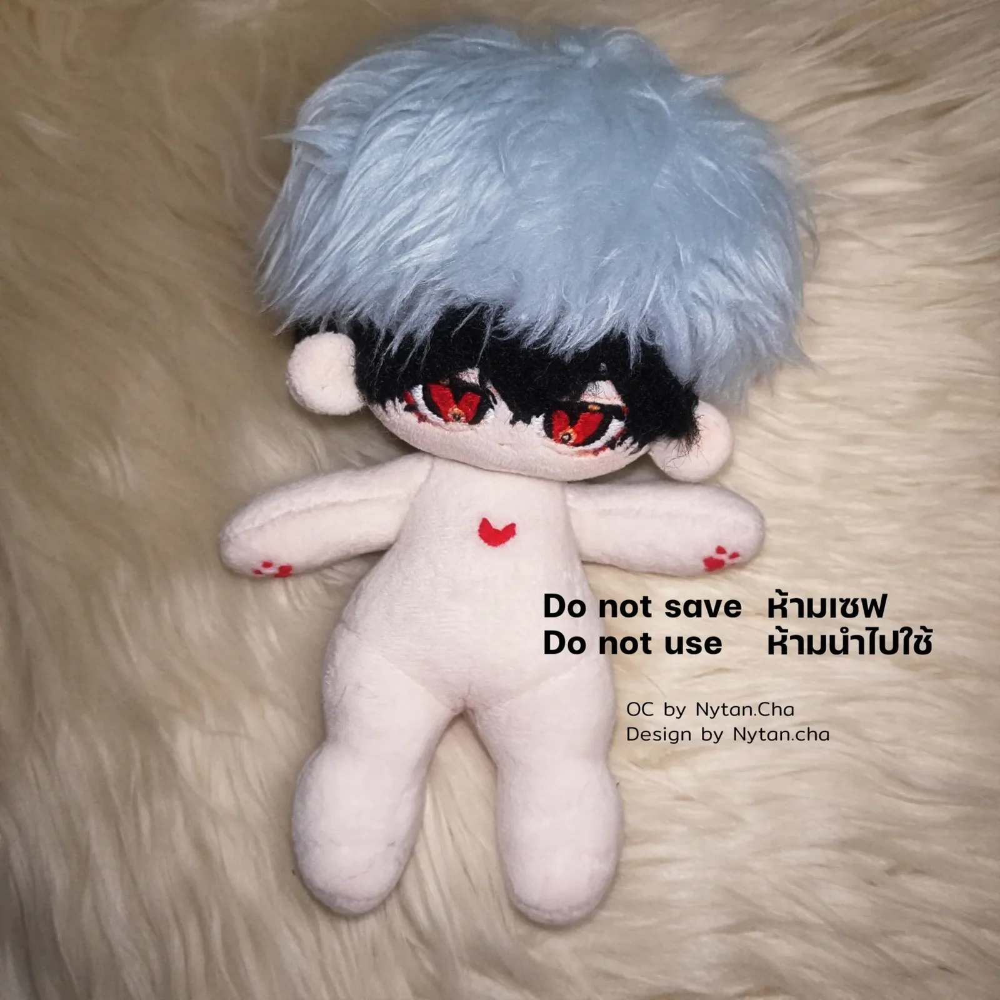

สายงาน 1 จาก 2
ผลิตภัณฑ์และต้นแบบ
ฉันเปลี่ยนไอเดียเป็นต้นแบบที่จับต้องได้ — คอนเซปต์ CAD พิมพ์ด้วยเครื่องพิมพ์ 3D ของตัวเอง เดินสายและบัดกรี — แล้วออกแบบใหม่ในส่วนที่ทดสอบแล้วไม่ผ่าน ฉันเขียนสเปก ให้ AI เขียนโค้ดส่วนใหญ่ แล้วตรวจผลเอง
เรซูเม่ (PDF ภาษาอังกฤษ): ผลิตภัณฑ์และต้นแบบ
โปรเจกต์หลัก

METO
หุ่นยนต์ตัวเล็กที่แสดงอารมณ์ได้ สร้างขึ้นเพื่อหาคำตอบว่าหุ่นที่แสดงอารมณ์ช่วยให้มือใหม่เรียนเขียนโปรแกรมแบบต่อบล็อกได้ต่างจากหุ่นที่ไม่แสดงอารมณ์หรือไม่

Magnetic Universe
แผงผนัง LED แม่เหล็กขนาด 40 × 40 ซม. สำหรับนิทรรศการแสง: แสงจะรวมอยู่ใต้แม่เหล็กแต่ละก้อนที่วาง (สูงสุด 2 ก้อน) และแสงสองกลุ่มจะผสานเป็นแสงเดียว
 รางวัลที่ 1
รางวัลที่ 1
DeepCore → DeepSphere
สำรวจทะเลลึกด้วยมือ: หมุนและปรับอุปกรณ์จริงแทนการใช้แอป และสัตว์ทุกตัวที่เจอมีอยู่จริง DeepCore ได้รางวัลที่ 1; DeepSphere กำลังทำ

svgtostl
เครื่องมือแปลงภาพวาดถมดำของฉันเป็นชิ้นงานพิมพ์ 3D พวงกุญแจและชิ้นเล็ก ๆ จึงพิมพ์ออกมาตรงกับที่วาด

โคมไฟพิกเซล Minecraft
โคมไฟพิกเซลพิมพ์ 3D ที่แสงเป็นพิกเซลแบบ Minecraft ควบคุมจากโทรศัพท์ มีโหมดตามสภาพอากาศ
งานชิ้นเล็ก

ตุ๊กตาผ้า
ตุ๊กตาสำหรับตัวละครออริจินัล: ชีตออกแบบของฉัน หน้าปัก หูแม่เหล็กถอดได้

Digital Puzzle Box
เกมปริศนา: บอร์ดจริงควบคุมกล่องปริศนาบนจอ และกุญแจดอกสุดท้ายเป็นของจริงที่ซ่อนอยู่บนบอร์ด

จานสีหลุมเล็ก
จานสีพิมพ์ 3D ขนาดเล็ก มี 18 หลุมเล็กและลึกในถาดขนาด 109 × 75 มม. — จานสีหลุมเล็กส่วนใหญ่มีแค่ 5–10 หลุม

การ์ดสะสม MOFYCH
การ์ดสะสมและใบรับรองที่ฉันออกแบบและส่งผลิตจริง: 4 แบบ แบบละ 4 ใบ ขนาด 90 × 50 มม. แยกเลเยอร์ไว้ทำโฮโลแกรม และผิวด้านกับผิวเรียบ
แนวคิด

OC Companion
อุปกรณ์ขนาดฝ่ามือ ทำตามสั่งหนึ่งเครื่องต่อตัวละคร (OC) ของผู้ซื้อหนึ่งคน: จอ AMOLED คือใบหน้าทั้งหน้า

เครื่องพับถุงพลาสติก
เครื่องในแนวคิดที่พับถุงพลาสติกเป็นสามเหลี่ยมและแยกตามขนาด ออกแบบตามโจทย์ SDGs

Mini Display To-Do List
แนวคิดอุปกรณ์ตั้งโต๊ะที่แสดงเฉพาะงานถัดไป มีปุ่ม Done ปุ่มดูความคืบหน้า และไฟเตือนกำหนดส่ง